COPA14
A Copa do Mundo FIFA de 2014, sediada no Brasil, foi marcada por grandes emoções, forte apelo popular, goleadas históricas e excelente média de público. O torneio teve como grande campeã a seleção da Alemanha, que conquistou o seu tetracampeonato mundial de forma invicta ao derrotar a Argentina por 1 a 0 na prorrogação da final disputada no Maracanã, com gol de Mario Götze.
O momento mais marcante e inesquecível da competição dentro de campo foi a semifinal entre Brasil e Alemanha, conhecida como o "Mineirazo", na qual os alemães aplicaram uma goleada histórica por 7 a 1 sobre a seleção brasileira no Estádio Mineirão. Além disso, a fase de grupos surpreendeu com eliminações precoces de gigantes, a exemplo da Espanha, então campeã mundial, que caiu após derrotas marcantes para Holanda e Chile.
Em termos de destaques individuais e organizacionais, o colombiano James Rodríguez brilhou como artilheiro com seis gols e levou o prêmio de gol mais bonito, enquanto o argentino Lionel Messi foi eleito o melhor jogador do torneio com a Bola de Ouro. A edição também ficou marcada pela introdução da tecnologia na linha de gol e de paradas técnicas para hidratação, consolidando-se como um evento de forte festa popular e engajamento nas doze cidades-sede.
Cidades
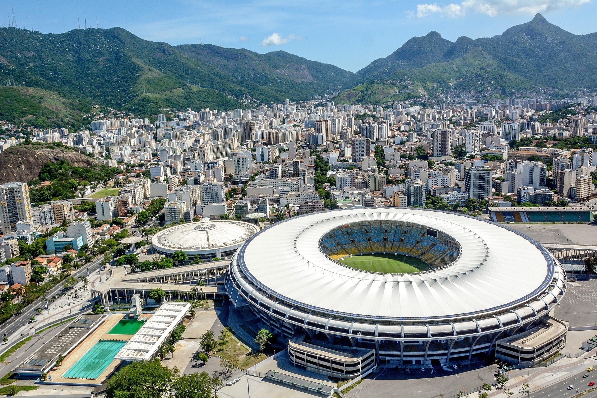
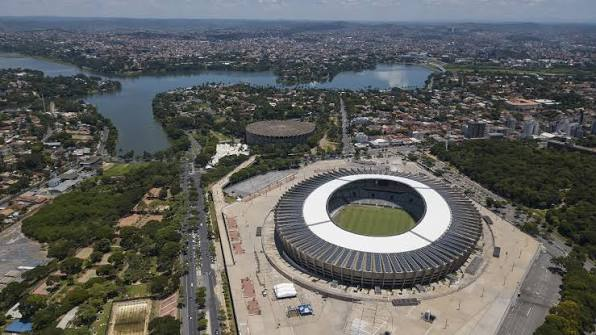
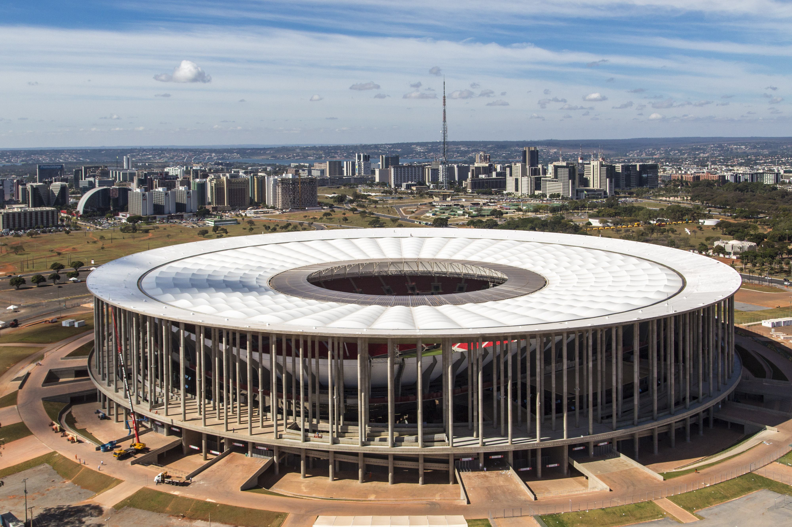
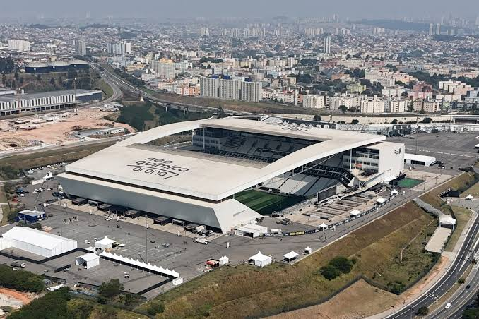
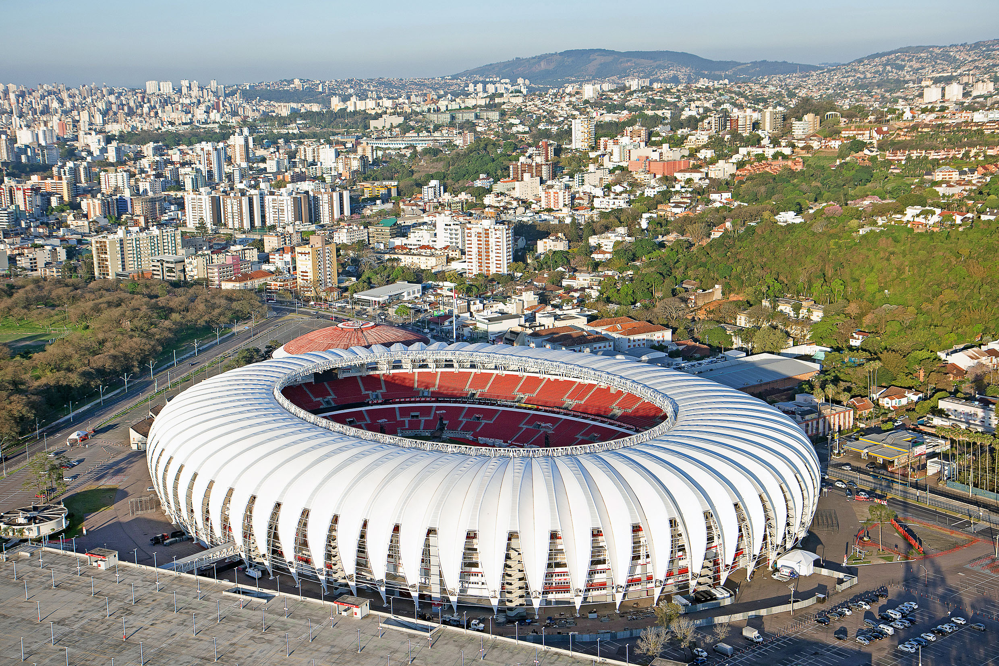
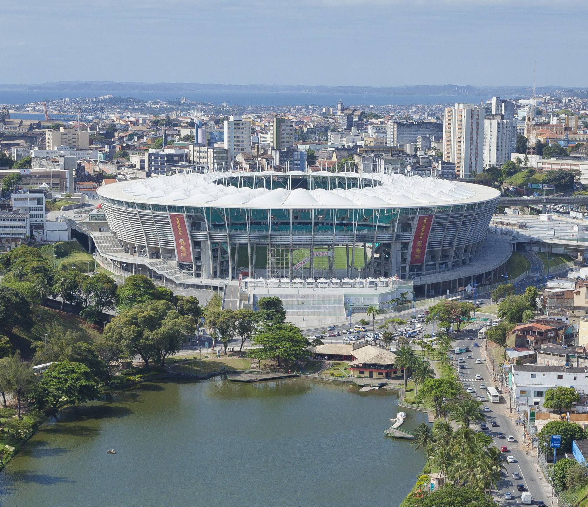
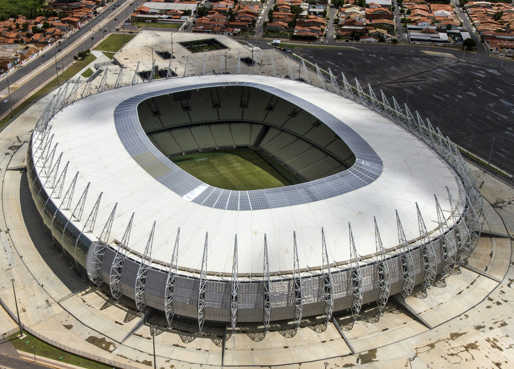
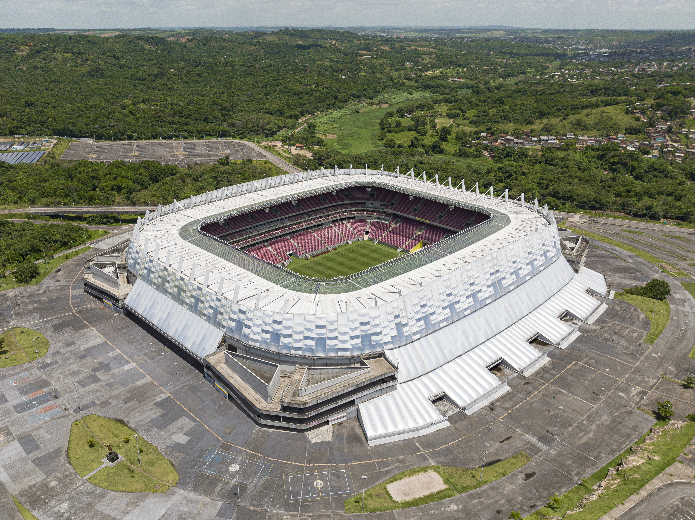
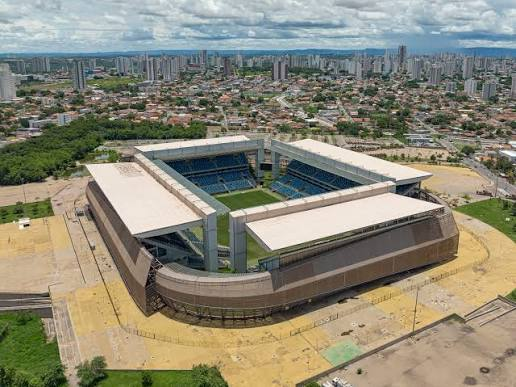
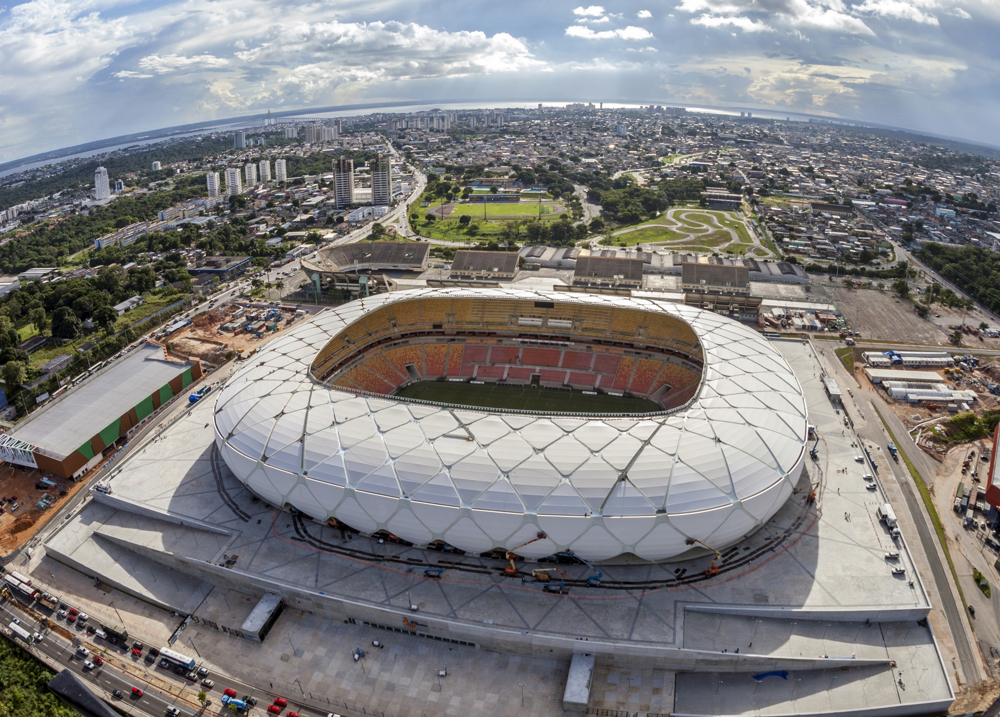
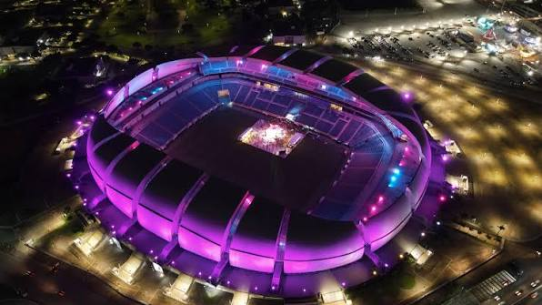
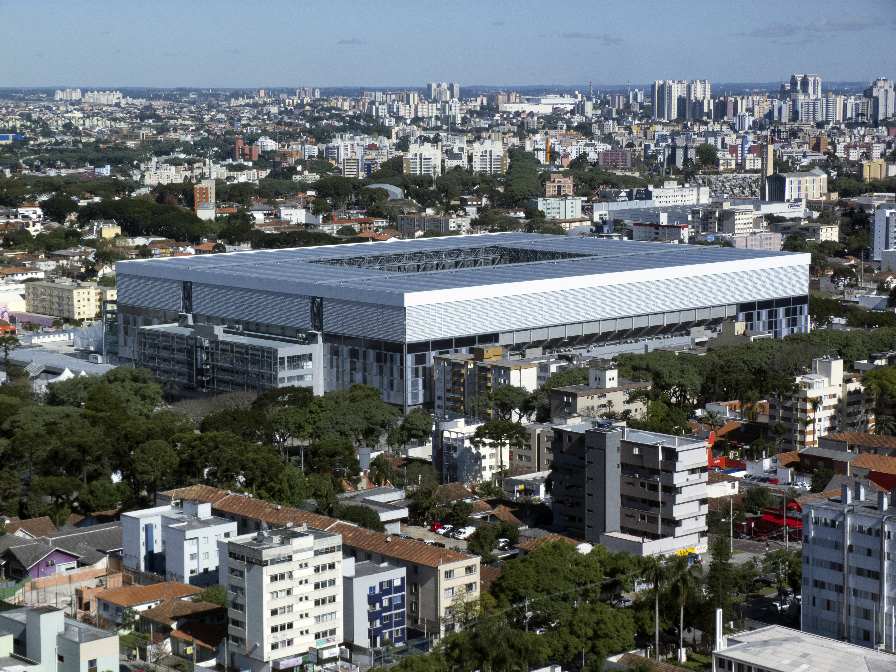
Galeria de Fotos
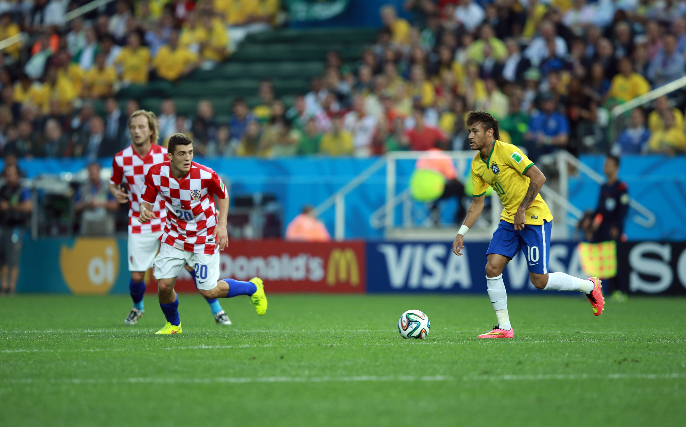
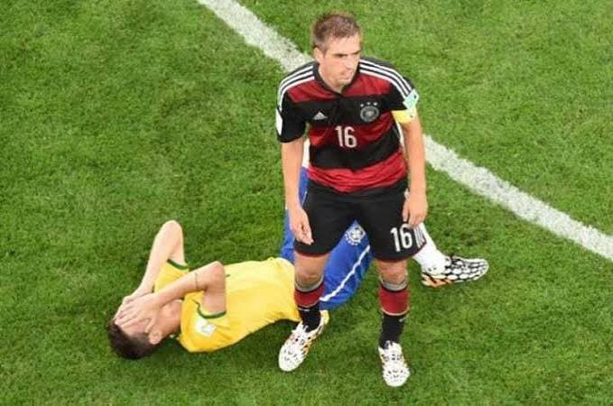
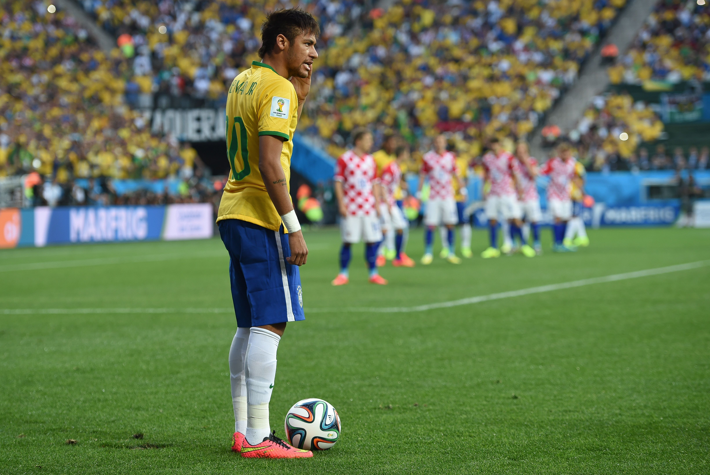
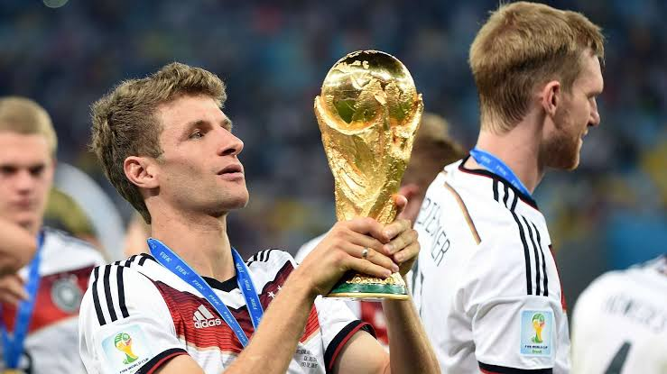
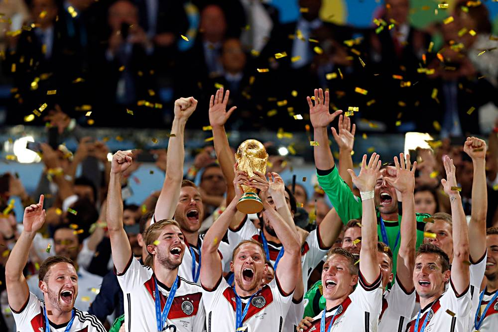
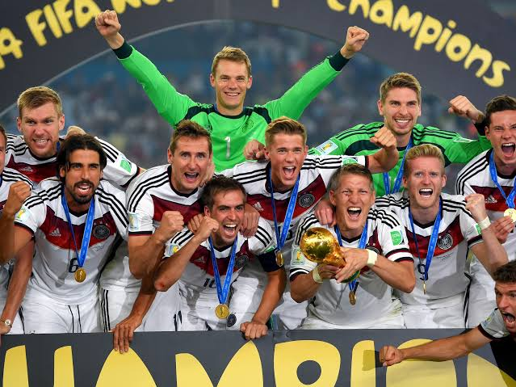